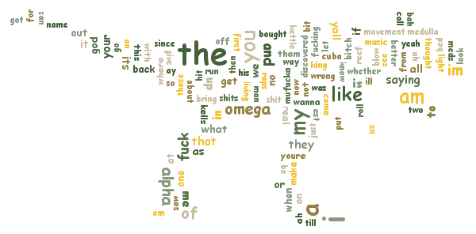

LYRICS
About This Project
Using hashmap to find the most frequent words in the song.
Exporting the result to generate the word cloud.
The word cloud is from the open source Kumo Library.
The reason I chose hashmap is because hashmap is fast, versatile and ubiquitous data structure.
About This Song
Machine Gun Kelly is one of my favorite rappers. Alpha Omega is one of the famous songs of MGK.
I like the flow and fast speed of Alpha Omega. The lyrics of Alpha Omega is very powerful.
MGK uses the Biblical reference to describe his status in rap; he's the beginning and end, aka the best.